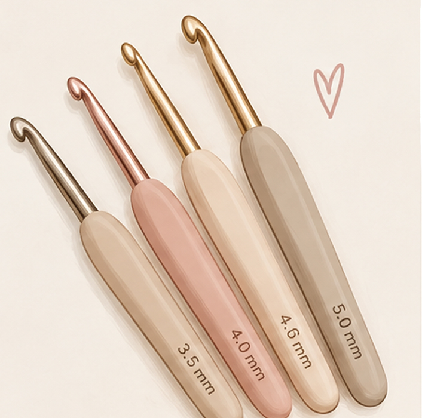
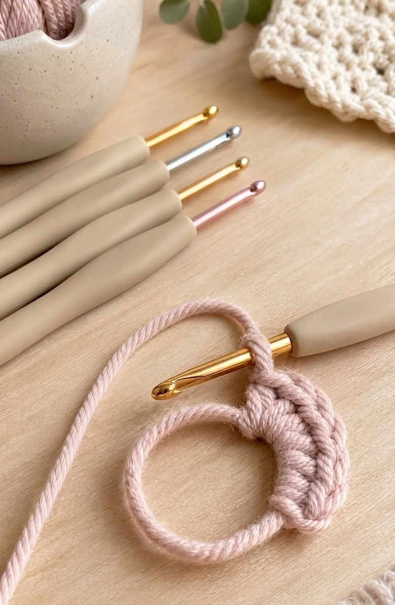
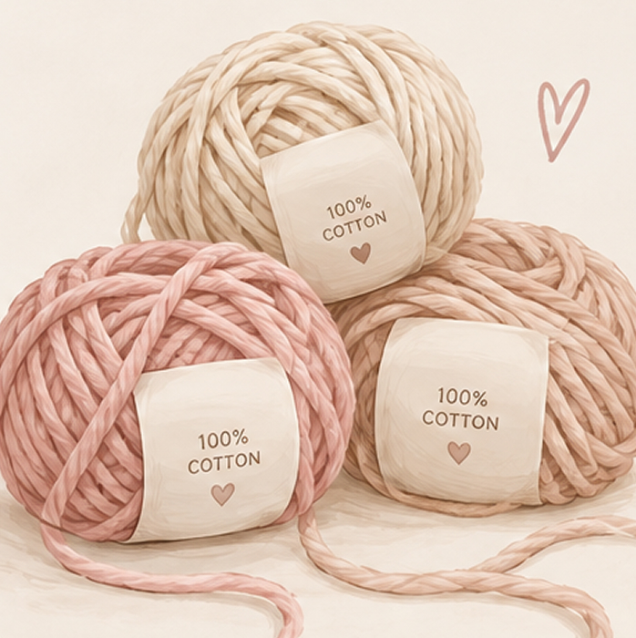
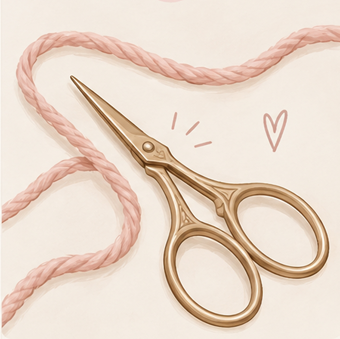
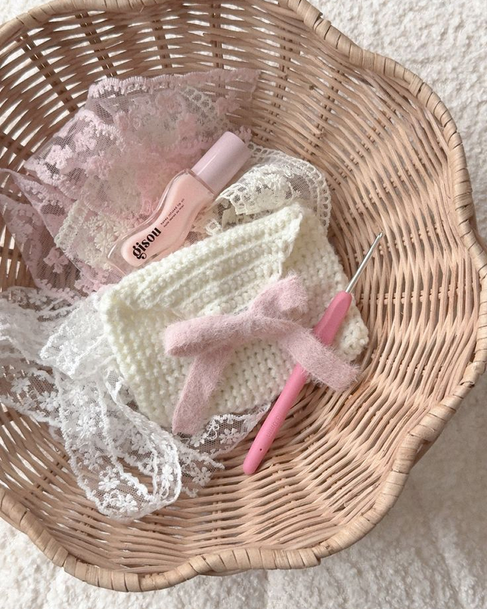

01 - Hæklenål
dit vigtigste værktøj
Start med 4-5mm
En mellemstor hæklenål er nem at arbejde med, når du er ny.
Alt du behøver ♡
Du behøver hverken dyrt udstyr eller en lang indkøbsliste. Med få simple ting er du klar til at hækle dine første masker.
Se det vigtigste →
Kun det vigtigste ♡

dit vigtigste værktøj
En mellemstor hæklenål er nem at arbejde med, når du er ny.

gør det nemt for dig selv
Et lyst garn i mellemstørrelse gør det lettere at se dine masker.

du har den sikkert allerede ♡
Du skal bruge den til at klippe garnet, når du er færdig.

Ikke nødvendigt endnu ♡
Du behøver ikke købe alt fra starten. Når du får mere erfaring, kan disse ting være rare at have:
Gør det lettere at holde styr på, hvor en omgang starter.
Bruges til at hæfte garnender, når dit projekt er færdigt.
Praktisk senere, når du arbejder med projekter, hvor størrelsen betyder noget.